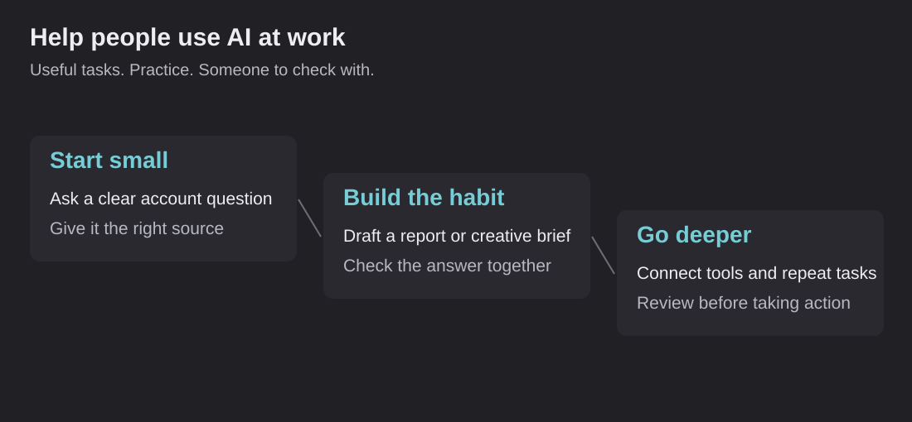

How I train the team
I joined elk Marketing in 2017, ran paid media as Director from 2020 and became VP of Paid Media in April 2026. Six strategists report to me. This page covers the standard they work from and how they learn it.
A strong strategist can do good work on their own. A department needs good work to happen when people are busy, new, or covering an account they did not build. That takes a written standard, practice on real work, and regular review.
The standard, in four rules
- Know the business before the account. What the client sells, how it makes money, what a customer is worth and what the client has agreed to.
- Change one thing on purpose. Every change has a reason, a scope and a date, so the result can be read.
- Prove the change landed. Screenshot proof at launch, a same-day check after, and a readout when the test is done.
- Say why, not just what. Reports lead with the answer, give two supporting facts, then the next action.
The detail lives in a 200-page audit and optimization guide I wrote, and in the Ad Training Library of playbooks, checklists and exercises. Every check in the guide is tied to the question it answers. Checking purchase tracking answers whether we can trust the numbers. Checking the landing page answers what a customer sees after the click. Checking the offer answers whether the ad's promise matches the product, the price and the stock.
Hiring and onboarding
I hire through panel interviews, a test project and a written scorecard, and brought on two strategists in 2026. Onboarding is built around work with a visible output: an account summary, a short performance explanation, a launch review, a creative brief. The reviewer sees how the new person thinks and where they need help, which a reading list never shows.
After that, the rhythm is biweekly 1:1s, a monthly audit of each account and a weekly paid-media roundtable where the team works through real problems together.
Teaching AI the same way
The team's AI rule is "AI is a process, not a prompt": plan the work, get a person's approval, check the result against real account numbers, then iterate. I wrote a training path that runs from a short beginner track through a deeper middle track to advanced practice, using exercises drawn from the team's own accounts.

A typical lesson: take a real weekly account question, give the AI the exact date range and source, ask for a short explanation, then check every number and mark anything uncertain. It teaches the tool and the judgment in the same exercise. Read a sample lesson, with invented numbers, a review checklist and a model answer.
Every piece of work has an owner
Most team problems are ownership problems. Who writes the brief, who reviews it, who launches the ads, who reads the result? When nobody knows, a task looks busy and nothing moves. This is the creative handoff the team uses:
Scroll sideways to see all columns.
| Stage | What must be settled | What the reviewer checks |
|---|---|---|
| Brief | Audience, buying moment, offer and one test question | Are the claims supported? Is the question worth answering? |
| Produce | Two concepts that differ in one planned way | Do the ads match the brief? |
| Review | Copy, links, product claims, formats and assets | Is anything missing or inconsistent? |
| Launch | Approved content and the exact intended setup | Does the live preview match what was approved? |
| Learn | Dates, spend, delivery and the result | What did the test show, and what is still unknown? |
Where AdNexus comes in
A written standard only works if people follow it on a busy Tuesday. In 2026 I started building it into software. AdNexus now runs the guide's checks on every account, prepares the evidence for each decision, and puts every account change through approval and verification before it counts. The training teaches the judgment. The software makes the routine parts hard to skip.